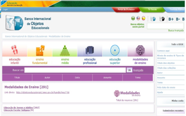

4. Estratégias de Comunicação: Do Analógico ao Digital
Como vimos nesta disciplina, a comunicação atravessou os tempos avançando na especialização das suas ferramentas. Hoje temos a nossa disposição variadas técnicas de produção cultural ligadas a comunicação. Como exemplos de interação entre a sociedade e a cultura por intermédio da comunicação, temos museus, centros de memória, websites, redes sociais, dispositivos móveis e outros instrumentos patrimoniais que podem ter como tema os direitos humanos.
Como já mencionamos, neste trabalho partimos do princípio que a quantidade de informação disponível hoje no mundo cibernético não determina o conhecimento, tampouco a qualidade da informação acessada, processada e distribuída. Com isso, devemos sempre ter bom senso na aplicação de técnicas de comunicação. Hoje temos a nossa disposição diversos bancos de imagens gratuitas como podemos ver do quadro a seguir:
Divulgamos esta lista por compreendermos que a comunicação visual é muito importante para qualquer atividade de comunicação social. Materiais que lançam mão apenas de textos, onde a leiturabilidade fica comprometida, é um investimento equivocado. Sempre que possível, a participação de um profissional do design, comunicação, marketing, publicidade e propaganda, são bem-vindos, pois estes profissionais foram preparados tecnicamente para estes fins.
O mundo digital e suas possibilidades são facilmente ignorados por projetos ou instituições devido ao baixo entendimento sobre o poder da comunicação. A produção de materiais de comunicação analógica ou digital deve ser vista como um investimento e não como um gasto. A publicidade aplicada sob a égide da economicidade faz com que a sociedade tenha acesso a informações que vão contribuir para a consolidação da cidadania.
Os mais baratos e simples materiais impressos de divulgação com que contamos nos dias de hoje são os folders, os cartazes, os flyers, mas campanhas de divulgação podem ser ancoradas apenas com a utilização dos meios digitais. Isso vai depender se o público alvo pode ser atingido apenas pelos meios digitais. Sites gratuitos ajudam muito na hora que precisamos divulgar nossos projetos, entretanto, pode ser desastrosa uma ação que não conte com um profissional da área. Uma boa ideia no lugar errado é uma péssima ideia. No quadro a seguir podemos ver algumas plataformas que disponibilizam gratuitamente websites, vejamos:
| http://www.ucoz.com/ |
| http://pt.wix.com/ |
| http://www.webnode.com.br/ |
| https://www.yola.com/ |
| http://br.jimdo.com/ |
| http://www.sitepx.com/ |
| http://www.weebly.com/?lang=pt |
Com base nos sites apresentados nos dois quadros anteriores, podemos começar a construir a divulgação dos nossos projetos. Com o banco de imagens temos conteúdos visuais e com o site grátis temos a estrutura com endereço. Entretanto, precisamos produzir o conteúdo textual, de vídeo e imagens que não podem ser capturadas em bancos de imagens, pois as visualidades regionais quase nunca estão em bancos de imagens.
Outra dica, principalmente para projetos de educação e aprendizado é o banco internacional de objetos educacionais disponível no endereço http://objetoseducacionais2.mec.gov.br/ que podemos ver na figura a seguir:
{kind=link}
Print do Banco Internacional de Objetos Educacionais
Na área dos chamados Museus Virtuais temos o Google Art Project e o Era Virtual que conta com aproximadamente duas dezenas de visitas virtuais de museus físicos de história no Brasil.
Página 153O Era Virtual está disponível no endereço eletrônico http://www.eravirtual.org/pt/ e consiste em um catálogo que possibilita visitas virtuais a 16 museus brasileiros subdivididos por estados. Em Minas Gerais são nove: Museu de Artes e Ofício; Museu do Oratório; Museu Casa Guignard; Casa Fiat de Cultura; Museu Casa Guimarães Rosa; Museu Histórico Abílio Barreto; Museu do Diamante; Museu da Inconfidência; Memorial Tancredo Neves. No Rio de Janeiro são quatro: Museu da República; Exposição Energia Nuclear Casa da Ciência; Exposição Carlos Chagas Filho; Biomas do Brasil Rio + 20. Em Santa Catarina são dois: Museu Victor Meirelles; Museu Nacional do Mar. Em Goiás um: Casa de Cora Coralina. E outras possibilidades de visitação estão sendo anunciadas no website do Era Virtual: Em Minas Gerais são dois: Museu de Ciência e Técnica; Museu de Ciências Naturais PUC Minas. No Rio de Janeiro são dois: Museu do Universo Planetário do Rio de Janeiro; Exposição: Sensações do passado Geológico da Terra. Em Pernambuco um: Museu do Homem do Nordeste. São Paulo um: Pinacoteca do estado de São Paulo.
Patrocinado pela Eletrobrás, Usiminas e pelo financiamento via leis de incentivo a cultura, o projeto ERA Virtual é uma realização do Empório de Relacionamento Artístico e tem como principais parcerias a Secretaria da Cultura do Estado de Minas Gerais e do Ministério da Cultura. Desde 2008 proporciona acessibilidade virtual aos acervos das instituições envolvidas, sendo bastante utilizado por escolas.
Já o Google Project Art disponível no endereço eletrônico http://www.googleartproject.com/pt-br/ o usuário pode navegar em 55 Museus Virtuais, catalogados em ordem alfabética. Apenas dois deste Museus Virtuais são brasileiros: a Pinacoteca do Estado de São Paulo, disponibilizando 98 obras de 48 artistas, e o Museu de Arte Moderna de São Paulo - MAM, disponibilizando 88 obras de 83 artistas.
{kind=link}
Publicidade da Sun Microsystems “A Rede é o Computador” (2008)
Para além dos sites, visitas virtuais, materiais gráficos, a ascendência dos dispositivos móveis são uma realidade cada vez mais popular no Brasil. Para que estejamos em contato com essa cultura, devemos produzir aplicativos para Tablet e Smartphones. A seguir apresentamos uma lista de sites onde podemos fazer um aplicativo gratuitamente e de forma rápida.
| http://fabricadeaplicativos.com.br/ |
| http://www.appmachine.com/pt-pt/ |
| http://www.infinitemonkeys.mobi/ |
| http://appgratis.com/br |
| http://www.appmakr.com/ |
A utilização das redes sociais como o Facebook, Twitter, Instagran, Linkedlin, como já vimos, são ferramentas de significativa importância estratégica por estar no ciberespaço, lugar comum onde pessoas “atuam” constantemente. Mas não podemos deixar de escolher profissionais específicos para a atuação nas redes sociais, com disponibilidade de tempo e preparação técnica e política para a interação com o público desejado.
Finalizamos assim o levantamento de ferramentas que podem contribuir para nossos projetos. Entretanto, não basta que tenhamos boas ferramentas nas mãos. Temos que ter inteligência e sabedoria na gestão e aplicação dessas ferramentas. Consideramos adequado, sempre que possível, discutir e aprofundar ao máximo o planejamento de qualquer ação no que diz respeito a transversalidade da cultura com a comunicação.